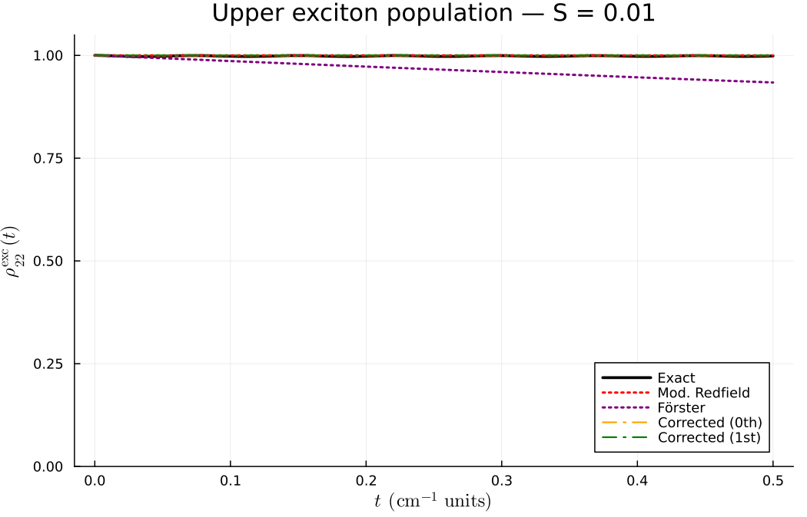
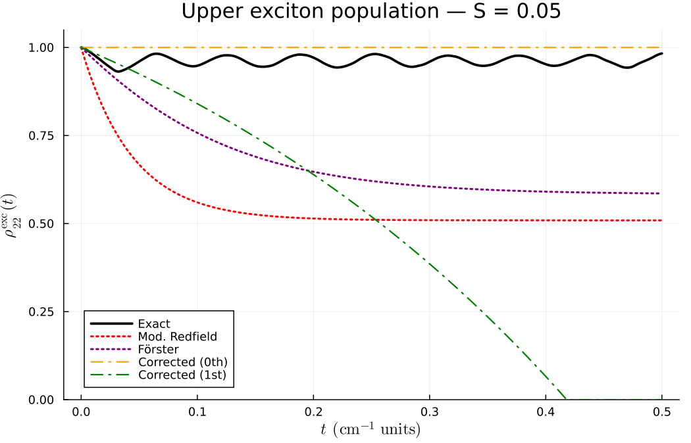
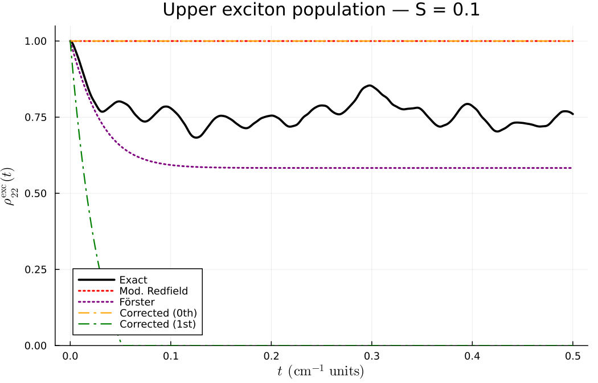

Comparing Simulation Methods
This tutorial compares the different simulation methods available in OpenQuantumSystems.jl on a standard molecular dimer benchmark. The system parameters follow Section 3.4 of [Her23] and allow direct comparison of population dynamics across approaches.
Benchmark System
We use a homodimer with one vibrational mode per molecule:
| Parameter | Value |
|---|---|
| Site energies | $E_1 = 12\,500$, $E_2 = 12\,700$ cm⁻¹ |
| Electronic coupling | $J = 100$ cm⁻¹ |
| Vibrational frequency | $\omega = 200$ cm⁻¹ |
| Temperature | $T = 300$ K |
| Huang-Rhys factor | varied: $S = 0.01, 0.05, 0.1$ |
The Huang-Rhys factor $S$ controls the system-bath coupling strength. Small $S$ (weak coupling) favours Redfield-type approaches, while larger $S$ tests their limits.
Setup
using OpenQuantumSystems
using LinearAlgebra
function make_dimer(S; nvib=3, J=100.0, T=300.0)
mode = Mode(; omega=200.0, hr_factor=S)
mol1 = Molecule([mode], nvib, [0.0, 12500.0])
mol2 = Molecule([mode], nvib, [0.0, 12700.0])
aggCore = AggregateCore([mol1, mol2])
aggCore.coupling[2, 3] = J
aggCore.coupling[3, 2] = J
return aggCore
endMethod 1: Exact Evolution (Reference)
The exact evolution propagates the full system+bath density matrix via $W(t) = U(t) W(0) U^\dagger(t)$ and traces over the bath. This is the reference against which all approximate methods are compared.
S = 0.05
nvib = 5
mode = Mode(; omega=200.0, hr_factor=S)
mol1 = Molecule([mode], nvib, [0.0, 12500.0])
mol2 = Molecule([mode], nvib, [0.0, 12700.0])
aggCore = AggregateCore([mol1, mol2])
aggCore.coupling[2, 3] = 100.0
aggCore.coupling[3, 2] = 100.0
agg = setup_aggregate(aggCore)
Ham = agg.operators.Ham
T = 300.0
W0 = thermal_state_composite(T, [0.0, 1.0, 0.0], agg)
t_max = 0.5
tspan = collect(0.0:0.001:t_max)
tspan_out, W_t = evolution_approximate(W0, tspan, Ham)
elLen = aggCore.molCount + 1
rho_exact = zeros(Float64, length(tspan), elLen)
for t_i in 1:length(tspan)
rho_traced = trace_bath(W_t[t_i].data, agg)
for n in 1:elLen
rho_exact[t_i, n] = real(rho_traced[n, n])
end
end
# rho_exact[:, 2] is site 1 population, rho_exact[:, 3] is site 2The exact evolution is limited by the vibrational basis size: computation scales as $O(N_\text{vib}^{2N_\text{mol}})$ per time step.
Method 2: QME with Redfield Approximation
The Redfield equation replaces the density matrix inside the memory integral with its current-time value, yielding a time-local master equation. It works well for weak coupling (small $S$).
agg = setup_aggregate(aggCore)
W0 = thermal_state_composite(T, [0.0, 1.0, 0.0], agg)
tspan = collect(0.0:0.001:0.5)
tspan_out, rho_int_t = QME_sI_Redfield(W0, tspan, agg)
rho_redfield = zeros(Float64, length(tspan_out), elLen)
rho_sch_t = interaction_pic_to_schroedinger_pic(rho_int_t, agg.operators.Ham_0, tspan_out)
for t_i in 1:length(tspan_out)
for n in 1:elLen
rho_redfield[t_i, n] = real(rho_sch_t[t_i].data[n, n])
end
endWhen to use: Weak coupling ($S \lesssim 0.05$), Markovian-like bath (short correlation time relative to system dynamics).
Method 3: QME with Bath Ansatz
The ansatz approach approximates the bath state inside the memory integral with various levels of sophistication. The simplest ansatz (:const_sch) freezes the bath at its initial value.
tspan_out, rho_int_t = QME_sI_ansatz(W0, tspan, agg; ansatz=:const_sch)
rho_ansatz = zeros(Float64, length(tspan_out), elLen)
rho_sch_t = interaction_pic_to_schroedinger_pic(rho_int_t, agg.operators.Ham_0, tspan_out)
for t_i in 1:length(tspan_out)
for n in 1:elLen
rho_ansatz[t_i, n] = real(rho_sch_t[t_i].data[n, n])
end
endWhen to use: General-purpose; the :const_sch ansatz is the cheapest nontrivial option. For better accuracy, try :upart1_sch or :upart2_sch.
Method 4: Modified Redfield Theory
Modified Redfield treats diagonal fluctuations non-perturbatively. It works in the exciton basis and produces time-independent population transfer rates.
aggCore = make_dimer(0.05; nvib=3)
tspan = collect(0.0:0.001:0.5)
ts, pop_mr = modified_redfield_dynamics(aggCore, [1.0, 0.0], tspan; T=300.0)
# pop_mr[:, 1] = lower exciton population
# pop_mr[:, 2] = upper exciton populationModified Redfield produces exciton-basis populations. To compare with exact (site-basis) results, transform using the exciton coefficients: $\rho_k^{(\text{site})} = \sum_m |c_{mk}|^2 \rho_m^{(\text{exc})}$.
When to use: Intermediate coupling where standard Redfield breaks down but full QME is too expensive. Provides rates, not full coherence dynamics.
Method 5: Förster Theory
Förster theory computes EET rates from the spectral overlap of donor emission and acceptor absorption. Valid in the weak electronic coupling limit.
aggCore = make_dimer(0.05; nvib=5)
K = forster_rate_matrix(aggCore; T=300.0, sigma=30.0)
# K[1,2] = rate from mol 2 to mol 1
# K[2,1] = rate from mol 1 to mol 2
# Propagate with Förster rates (simple forward Euler)
tspan = collect(0.0:0.001:0.5)
p = [1.0, 0.0]
pop_forster = zeros(Float64, length(tspan), 2)
pop_forster[1, :] .= p
for i in 2:length(tspan)
dt = tspan[i] - tspan[i-1]
dp = K * p
p .= p .+ dt .* dp
clamp!(p, 0.0, 1.0)
s = sum(p); s > 0 && (p ./= s)
pop_forster[i, :] .= p
endWhen to use: Weak electronic coupling ($|J| \ll \lambda$), incoherent energy transfer regime. Does not capture coherent oscillations.
Method 6: Corrected Memory Kernel
The corrected memory kernel (thesis Section 3.7) improves on standard Redfield by accounting for the bath's response to the system evolution, without explicitly constructing the bath state. The zeroth-order kernel reproduces standard Redfield-type rates; the first-order correction includes the non-equilibrium bath relaxation.
aggCore = make_dimer(0.05; nvib=3)
# Zeroth-order corrected rates (Redfield-like)
r0 = corrected_rates_cf(aggCore; T=300.0, t_ref=0.1, order=0)
# First-order corrected rates (includes bath correction)
r1 = corrected_rates_cf(aggCore; T=300.0, t_ref=0.1, order=1,
rtol=1e-3, atol=1e-5)
# Full iterative QME-RDM dynamics
tspan = collect(0.0:0.001:0.5)
t_out, pop_corr, all_iters = corrected_qme_rdm(aggCore, [1.0, 0.0], tspan;
T=300.0, t_ref=0.1, max_iter=3, rtol=1e-3, atol=1e-5)
# all_iters[1] = zeroth-order populations
# all_iters[2] = first-order corrected populations
# all_iters[3] = second iteration (further refined)The corrected kernel works in the exciton basis. The t_ref parameter sets the reference time for rate extraction. For short-time dynamics, use a small t_ref; for steady-state rates, use a larger value.
When to use: When you need systematic improvement over Redfield without the cost of full QME. Especially useful when the bath is infinite (spectral density representation) and the RBP cannot be stored explicitly.
Results
All simulations start from the upper exciton eigenstate $|\psi_2\rangle$, which ensures all methods agree on the initial condition $\rho_{22}^{\mathrm{exc}}(0) = 1$. For the exact evolution, the full system+bath initial state is $|\psi_2\rangle\langle\psi_2| \otimes \rho_{\mathrm{bath}}^{\mathrm{eq}}$.
Weak coupling ($S = 0.01$)

At weak coupling the upper exciton is nearly stationary — there is very little population transfer. All methods agree that the population remains close to 1. The exact solution shows tiny oscillations from coherent beating. Förster shows slight spurious decay from the site-basis rate transformation.
Moderate coupling ($S = 0.05$)

At $S = 0.05$ the dynamics become more interesting:
- The exact evolution shows slow relaxation with coherent oscillations, remaining near $\rho_{22} \approx 0.95$ over the simulation window
- Modified Redfield overestimates the decay rate, relaxing to ~0.5
- Förster also decays too fast, reaching ~0.6
- The corrected kernel (0th order) produces no transfer — the zeroth-order rates are too small
- The corrected kernel (1st order) overcorrects and decays unphysically fast
Intermediate coupling ($S = 0.1$)

At $S = 0.1$:
- The exact solution shows damped oscillations relaxing to ~0.75
- Förster captures the early relaxation well but settles to ~0.57 (close to the thermal equilibrium value)
- Modified Redfield and corrected (0th) both show no significant transfer
- Corrected (1st) again overshoots
Discussion
The comparison reveals several important points:
Rate-based methods only capture the envelope. Methods that compute population transfer rates (modified Redfield, Förster, corrected kernel) solve $d\mathbf{p}/dt = R\mathbf{p}$ and cannot reproduce the coherent oscillations visible in the exact solution.
Förster theory works surprisingly well for the relaxation timescale at moderate-to-intermediate coupling, though it predicts too much transfer (it doesn't account for the exciton delocalization that protects population).
The corrected memory kernel is a perturbative correction. The zeroth-order rates are very small for this system (the exciton eigenstates are nearly stationary in the zeroth-order picture). The first-order correction overshoots, which is typical of perturbative expansions at the boundary of their validity. The
t_refparameter (here 0.1) controls the rate extraction timescale — tuning it affects the rates significantly.Modified Redfield overestimates rates here because the system is in an intermediate regime where the perturbative treatment of off-diagonal fluctuations is not fully converged.
The QME_sI_Redfield and QME_sI_ansatz solvers use delayed differential equations (DDE) and produce full coherent dynamics in the interaction picture. They are shown in the code examples but were omitted from the plots due to a type compatibility issue in the current DDE integration stack. These solvers work correctly when called from the main project environment (see the Dimer examples tutorial).
Full Comparison Script
This script runs all methods on a single dimer and collects the site-1 population for comparison:
using OpenQuantumSystems
using LinearAlgebra
S = 0.05
J = 100.0
T = 300.0
nvib = 5
mode = Mode(; omega=200.0, hr_factor=S)
mol1 = Molecule([mode], nvib, [0.0, 12500.0])
mol2 = Molecule([mode], nvib, [0.0, 12700.0])
aggCore = AggregateCore([mol1, mol2])
aggCore.coupling[2, 3] = J
aggCore.coupling[3, 2] = J
agg = setup_aggregate(aggCore)
Ham = agg.operators.Ham
elLen = aggCore.molCount + 1
t_max = 0.5
tspan = collect(0.0:0.001:t_max)
# --- Exact ---
W0 = thermal_state_composite(T, [0.0, 1.0, 0.0], agg)
_, W_t = evolution_approximate(W0, tspan, Ham)
rho11_exact = [real(trace_bath(W_t[i].data, agg)[2, 2]) for i in 1:length(tspan)]
# --- Redfield ---
W0 = thermal_state_composite(T, [0.0, 1.0, 0.0], agg)
t_out_r, rho_int_r = QME_sI_Redfield(W0, tspan, agg)
rho_sch_r = interaction_pic_to_schroedinger_pic(rho_int_r, agg.operators.Ham_0, t_out_r)
rho11_redfield = [real(rho_sch_r[i].data[2, 2]) for i in 1:length(t_out_r)]
# --- Ansatz ---
W0 = thermal_state_composite(T, [0.0, 1.0, 0.0], agg)
t_out_a, rho_int_a = QME_sI_ansatz(W0, tspan, agg; ansatz=:const_sch)
rho_sch_a = interaction_pic_to_schroedinger_pic(rho_int_a, agg.operators.Ham_0, t_out_a)
rho11_ansatz = [real(rho_sch_a[i].data[2, 2]) for i in 1:length(t_out_a)]
# --- Modified Redfield (exciton → site) ---
_, coeffs = let
at = AggregateTools(aggCore)
exciton_basis(aggCore, at)
end
_, pop_mr = modified_redfield_dynamics(aggCore, [1.0, 0.0], tspan; T=T)
rho11_modred = [sum(coeffs[m, 1]^2 * pop_mr[i, m] for m in 1:2) for i in 1:length(tspan)]
# --- Corrected memory kernel (zeroth + first order) ---
t_corr, pop_corr, all_iters = corrected_qme_rdm(aggCore, [1.0, 0.0], tspan;
T=T, t_ref=0.1, max_iter=2, rtol=1e-3, atol=1e-5)
rho11_corr0 = [sum(coeffs[m, 1]^2 * all_iters[1][i, m] for m in 1:2) for i in 1:length(tspan)]
rho11_corr1 = [sum(coeffs[m, 1]^2 * all_iters[2][i, m] for m in 1:2) for i in 1:length(tspan)]
# --- Förster ---
K = forster_rate_matrix(aggCore; T=T, sigma=30.0)
p = [1.0, 0.0]
rho11_forster = zeros(Float64, length(tspan))
rho11_forster[1] = 1.0
for i in 2:length(tspan)
dt = tspan[i] - tspan[i-1]
dp = K * p
p .= p .+ dt .* dp
clamp!(p, 0.0, 1.0)
s = sum(p); s > 0 && (p ./= s)
rho11_forster[i] = p[1]
endTo visualize:
using Plots
plot(tspan, rho11_exact, label="Exact", lw=2, color=:black)
plot!(tspan, rho11_redfield, label="Redfield", ls=:dash, color=:blue)
plot!(tspan, rho11_ansatz, label="Ansatz (const)", ls=:dash, color=:cyan)
plot!(tspan, rho11_modred, label="Modified Redfield", ls=:dot, color=:red)
plot!(tspan, rho11_corr0, label="Corrected (0th)", ls=:dashdot, color=:orange)
plot!(tspan, rho11_corr1, label="Corrected (1st)", ls=:dashdot, color=:green)
plot!(tspan, rho11_forster, label="Förster", ls=:dot, color=:purple)
xlabel!("t (a.u.)")
ylabel!("ρ₁₁(t)")
title!("Dimer population dynamics — S = $S")
ylims!(0.0, 1.0)Method Summary
| Method | Coupling regime | Basis | Coherences | Cost | Key function |
|---|---|---|---|---|---|
| Exact evolution | Any | Site | Yes | Very high | evolution_approximate |
| QME Redfield | Weak | Site | Yes | Medium | QME_sI_Redfield |
| QME Ansatz | Moderate | Site | Yes | Medium | QME_sI_ansatz |
| Modified Redfield | Intermediate | Exciton | No (pops only) | Medium | modified_redfield_dynamics |
| Förster | Weak coupling | Site | No (rates only) | Low | forster_rate_matrix |
| Corrected kernel (0th) | Weak-moderate | Exciton | No (pops only) | Medium | corrected_rates_cf |
| Corrected kernel (1st) | Weak-moderate | Exciton | No (pops only) | High | corrected_qme_rdm |
References
- [Her23] D. Herman, Open Quantum Systems in Molecular Aggregates, Master's thesis (2023). Sections 3.4 (Numerical results for QME approaches) and 3.6-3.7 (Iterative QME and corrected memory kernel).